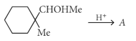

Q.1.The molality of the 3 M solution of methanol if the density of the solution is 0.9 g cm-3 is
Q.2.The number of angular and radial nodes in 3p orbital respectively are
Q.3. Which of the following is not isomorphous with true alums and is called pseudo alums?
Q.4.In which pair of ions both the species contain S — S bond?
Q.5.The manganate and permanganate ions are tetrahedral, due to
Q.6.Which of the following has longest C-O bond length?(Free C-O bond length in CO is 1.128 Å.)
Q.7.The maximum number of possible optical isomers in 1-bromo-2-methylcyclobutane is
Q.8.The following alcohol after treatment with acid gives compound A. Ozonolysis of A gives nonane-2, 8-dione. The compound A is 
Q.9.Which of the following oxides is the most acidic?
Q.10.Consider the following species, 1. [O₂]²⁻ 2. [CO]⁺ 3. [O₂]⁺ Among these, only sigma bond alone is present in
Q.11. The product of the following reaction is
Q.12. If same type of atoms are packed in hexagonal close packing and cubic close packing separately, then
Q.13.The coagulation of 200 mL of a positive colloid took place when 0.73 g HCl was added to it without changing the volume much. The flocculation value of HCl for the colloid is
Q.14. Which of the following forces is the strongest?
Q.15. Consider the following four electrodes, P = Cu²⁺ (0.0001 M)/Cu(s) , Q = Cu²⁺ (0.1 M)/Cu(s) R = Cu²⁺ (0.01 M)/Cu(s) ,S = Cu²⁺ (0.001 M)/Cu(s) If the standard reduction potential of Cu ²⁺ /Cu is +0.34 V, the reduction potentials in volts of the above electrodes follow the order
Q.16. The crystal field stabilisation energy (CFSE) for [CoCl₆]⁴⁻ is 18000 cm⁻¹ . The CFSE for [CoCl₄]²⁻ will be
Q.17. Of the following 0.10 m aqueous solutions, which one will exhibit the largest freezing point depression?
Q.18. Which of the following chemical system is non aromatic?
Q.19. 0.833 mole of a carbohydrate with empirical formula CH₂O, has 10 g of hydrogen. Molecular formula of the carbohydrate is
Q.20.The compound A on treatment with Na gives B, and with PCl₅ gives C. B and C react together to give diethyl ether. A, B and C are in the order
Q.21. The glycosidic linkage involved in linking the glucose units in amylose part of starch is
Q.22. The correct increasing order of basic strength for the following compounds is
Q.23. A gas at high temperature is cooled. The highest temperature at which liquefaction of gas first occurs
Q.24. E₁, E₂ and E₃ are the emfs of the following three galvanic cells respectively:
Q.25. Sulphur trioxide gas when dissolved in H₂SO₄, the product obtained is
Q.26. Cryolite is
Q.27.Bauxite has the composition
Q.28. Ethyl benzene cannot be prepared by
Q.29. The boiling point of p-nitrophenol is higher than that of o-nitrophenol because
Q.30. What is the correct sequence of reagents for the following preparations?
Q.31.The correct order of strengths of the carboxylic acids is
Q.32.In the solid state PCl₅ exists as
Q.33. For hydrogen-oxygen fuel cell at one atm and 298 K H₂(g) + 1/2 O₂(g) → H₂O(l); ΔG° = –240 kJ E° for the cell is approximately, (Given : F = 96,500 C)
Q.34. In a zero-order reaction, for every 10°C rise of temperature, the rate is doubled. If the temperature is increased from 10°C to 100°C, the rate of the reaction will become
Q.35. Arrange the following nucleophiles in the decreasing order of nucleophilicity :
Q.36.What quantity (in mL) of 45% acid solution of a monoprotic strong acid must be mixed with a 20% solution of the same acid to produce 800 mL of a 29.875% acid solution?
Q.37.Consider a reaction aG + bH → products. When concentration of both the reactants G and H is doubled, the rate increases eight times. However, when concentration of G is doubled keeping the concentration of H fixed, the rate is doubled. The overall order of the reaction is
Q.38.The actinoids exhibit more number of oxidation states in general than the lanthanoids. This is because
Q.39.An aqueous solution contains Hg2+, Hg22+, Pb2+ and Cd2+ ions. The addition of HCl of 6 N will precipitate
Q.40.In the lnK vs 1/T plot of a chemical process having ΔS° > 0 and ΔH° < 0 the slope is proportional to (where K is equilibrium constant)
Q.41.In the following sequence of reactions, the correct structures of E,F, and G are
Q.42.For the process H2O(l)(1 bar,373 K) → H2O(g)(1 bar,373 K), the correct set of thermodynamic parameters is
Q.43.k1 and k2 are specific conductance values of the solutions A and B in the same conductivity cell. If equal volumes of solutions A and B are mixed, what will be the resistance of the mixture using the same conductivity cell whose cell constant is x? (Assume there is no change in the degree of dissociation on mixing).
Q.44.Solubility product of silver bromide is 5.0 × 10–13. The quantity of potassium bromide (molar mass taken as 119 g mol–1) to be added to 1 litre of 0.05 M solution of silver nitrate to start the precipitation of AgBr is
Q.45.The reagent which can be used to bring about the following transformation is
Q.46.On treating a compound with warm dil. H2SO4, gas X is evolved which turns K2Cr2O7 paper acidified with dil. H2SO4 to a green coloured compound Y. X and Y respectively are
Q.47.Among the following, the compound that is both paramagnetic and coloured is
Q.48.Heat treatment of muscular pain involves radiation of wavelength of about 900 nm. Which spectral line of H–atom is suitable for this purpose? [RH = 1 × 105 cm-1, h = 6.6 × 10-34 J s, c = 3 × 108 m s-1]
Q.49.Experimentally it was found that a metal oxide has formula M0.98OO. Metal M is present as M2+ and M3+ in its oxide. Fraction of the metal which exists as M3+ would be
Q.50.5 g of Na2SO4 was dissolved in x g of H2O. The change in freezing point was found to be 3.82 °C. If Na2SO4 is 81.5% ionised, then what will be the value of x? (Kf for water is approximately 1.86 °C kg mol–1; Molar mass of S = 32 g mol–1 and Na = 23 g mol–1)